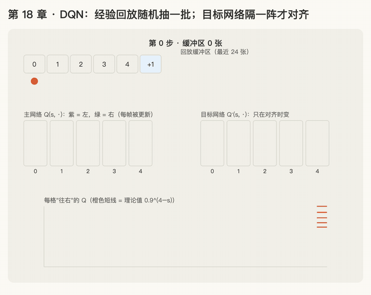

第 18 章 · DQN：神经网络 + 经验回放 + 目标网络
本章回答：把 Q-learning 的表格换成神经网络，会遇到什么麻烦？DQN 用了哪两个招数让训练稳下来？loss 到底在算什么？
讲解日期：2026-11-13 · 上一章：第 17 章 函数近似与梯度下降 · 下一章：第 19 章 过估计与 Double DQN
对应原文：CS 285 第 7 讲（lec-07.txtL120–L180 Fitted Q-iteration）、第 8 讲 Part 1（lec-08.txtL7–L67：target networks、经典 DQN 算法、Polyak）；DQN 论文 Mnih et al. 2013（papers/dqn-1312.5602.txtL242–L290 经验回放）
本章缩写：DQN = Deep Q-Network（深度 / Q / 网络）；θ：希腊字母 theta，Q 网络的参数（第 17 章的 \(\mathbf w\)）；θ⁻（θ 右上角一个减号）：目标网络的参数；loss：损失（要最小化的误差）；replay buffer：回放缓冲区；Atari：雅达利，1970–80 年代的游戏机；HW3 = Homework 3（CS 285 第 3 个作业）。全部缩写见 附录 · 缩写与术语表
讲解
第一步：Q-learning + 神经网络：把 Q 表换成一个网络（2026-11-13）
第 16 章的 Q-learning：一张表 Q(s, a)，每走一步按 \(r + \gamma\max_{a'}Q(s', a')\) 更新一格。
第 17 章：表格装不下时，用带参数的函数近似。
两者一拼：用一个神经网络 \(Q(s, a; \theta)\) 来近似 Q 表：输入状态 s，输出每个动作的 Q 值（比如 Atari 游戏：输入屏幕画面，输出 18 个按键各自的 Q 值）。参数 θ 就是网络里的所有权重。
训练目标：让网络的输出接近 TD 目标：
- \(y\)：第 16 章 Q-learning 的目标；
- loss：网络的估计和目标差多少，平方以后都是正数；
- 对 loss 做梯度下降（第 17 章第三步），调 θ。
这其实是在做"回归"（CS 285 第 7 讲 L120–L180 Fitted Q-iteration）：把 y 当成"标准答案"，让网络去拟合它，和监督学习一模一样。
手算一个 y：r = 0，γ = 0.9，目标网络在 s' 输出 [0.5, 0.8]（两个动作）：
一句话：DQN = 用神经网络输出每个动作的 Q 值，把 Q-learning 的目标 y 当标准答案做回归，loss = (y − Q)²。
第二步：麻烦一：前后相关的数据：经验回放（2026-11-13）
问题：智能体按时间顺序一步步玩，连续几步的数据非常像（游戏画面上一帧和下一帧几乎一样）。拿它们一个接一个地训练网络：
- 网络会被"最近这一段"带偏：一直在第 1 关练，就忘了第 2 关；
- SGD 假设每个样本是"随便抽的"，连续相关的数据违反了这一点。
类比：背单词。 如果每天只按字母顺序背 A 开头的单词，背到 Z 时 A 早忘了。更好的办法是把所有背过的单词放进一个盒子，每次随机抽一把来复习。
经验回放 experience replay（DQN 论文 L242–L250）：
- 每走一步，把 \((s, a, r, s', \text{是否结束})\) 这一条经历存进一个大缓冲区（replay buffer），存满了就扔掉最老的；
- 训练时，从缓冲区里随机抽一小批（比如 32 条）来算 loss。
好处（论文 L285–L290）：
- 随机抽打乱了前后相关，训练更稳；
- 每条经历能被反复用很多次，省数据；
- 为什么可以用"旧的经历"：Q-learning 是 off-policy（第 16 章第三步），学最优 Q 不要求数据来自当前策略。SARSA 就不能这样随便用旧数据。
一句话：经验回放 = 把经历存进缓冲区、训练时随机抽一批；打乱相关、反复利用；能这样做是因为 Q-learning 是 off-policy。
第三步：麻烦二：追着自己跑的目标：目标网络（2026-11-13）
问题（CS 285 第 8 讲 L11–L36）：目标 \(y = r + \gamma\max Q(s', a'; \theta)\) 里也有 θ。每次梯度下降改了 θ，目标 y 也跟着变了。
类比：追自己的影子。 你往前跑一步，影子也往前挪一步，永远追不上；或者像射箭时靶子在不停地晃。
第 17 章第四步说过：半梯度"假装目标是常数"，但目标其实在动。用表格时问题不大；换成神经网络，改一次 θ 会让所有状态的 Q 一起变，目标晃得厉害，训练很容易发散。
目标网络 target network（lec-08.txt L37–L48）：再复制一个一模一样的网络，参数记作 \(\theta^-\)，专门用来算目标：
- 训练时只改主网络 θ，\(\theta^-\) 不动；
- 每隔一段时间（比如 1 万步；讲义代码里 100 步），把 θ 复制给 \(\theta^-\)，对齐一次。
在两次对齐之间，目标是真正固定的，网络就是在做一个"稳稳当当的回归"（L33–L36："perfectly well-defined, stable regression"）。
另一种对齐法（L55–L67）：不隔一段时间整个复制，而是每一步让 \(\theta^-\) 往 θ 挪一点点：\(\theta^- \leftarrow 0.995\,\theta^- + 0.005\,\theta\)（Polyak 平均；Polyak 是苏联数学家的名字）。
一句话：目标里也有 θ，改 θ 目标就晃；目标网络 \(\theta^-\) 专门算目标、隔一阵才对齐，让每段时间里的回归目标固定不动。
第四步：完整的 DQN，在走廊上跑一遍（2026-11-13）
把三块拼起来（lec-08.txt L49–L54，"You'll implement this in HW3!"）：
循环：
1. 在 s 按 ε-greedy 选动作 a（第 13 章），做一步，得到 r、s'
2. 把 (s, a, r, s', 结束?) 存进回放缓冲区
3. 从缓冲区随机抽 32 条
4. 用目标网络算 y = r + γ max Q(s', ·; θ⁻)（结束时 y = r）
5. loss = (y − Q(s, a; θ))² 的平均，梯度下降更新 θ
6. 每隔 N 步：θ⁻ ← θ
一个小环境：走廊（讲义编的）：6 格，从第 0 格出发，动作"左 / 右"，走到第 5 格拿 +1 结束，其余奖励 0，γ = 0.9。
理论答案：最优是一直往右。离终点还差 k 步时，往右走的 Q = \(0.9^{k-1}\)（拿到 +1 前要打 k − 1 次折）。
用一个很小的网络（输入 6 维 one-hot，中间 32 个神经元，输出 2 个 Q 值）训练 3000 步：
| 格子 | 0 | 1 | 2 | 3 | 4 |
|---|---|---|---|---|---|
| 学到的 Q(·, 右) | 0.656 | 0.729 | 0.810 | 0.900 | 1.000 |
| 理论 \(0.9^{4-s}\) | 0.656 | 0.729 | 0.810 | 0.900 | 1.000 |
完全对上。往左的 Q 都比往右小（比如第 4 格往左 0.81 < 往右 1.0），贪心策略就是一直往右。
真正的 DQN（论文 2013 年）用同样的结构，只是网络换成看游戏画面的卷积网络，在 Atari 游戏上第一次让一个算法直接从像素学会玩几十个游戏。CS 285 HW3 的第一部分就是写这个（先在 CartPole、LunarLander 上，再到 Atari MsPacman）。
一句话：DQN = ε-greedy 采样 + 回放缓冲区 + 目标网络 + 回归 loss；走廊上学到的 Q 和理论 \(0.9^{k-1}\) 完全一致。
动画演示：经验回放随机抽一批；目标网络隔一阵才对齐

可交互版：animations/l18-dqn.html（要能点按钮、拖滑块，需要用本地服务打开，见 animations/README.md"跑起来看"）。
怎么看：
- 左上是走廊，智能体按 ε-greedy 走，每一步的 (s, a, r, s') 变成一张小卡片塞进右边的回放缓冲区（第二步）；
- 每帧从缓冲区随机抽几张卡片（高亮），用"目标网络"那一栏算 y，用"主网络"那一栏算 Q，差值就是 loss；
- 主网络的 Q 柱每帧都在变，目标网络的 Q 柱只在"对齐"闪一下时才跳过去（第三步）；
- 下方曲线是每格"往右"的 Q，慢慢爬到 0.656 … 1.0；滑块调对齐间隔，调到 1（每步都对齐）时曲线会更抖。
练习与作答记录
题 1：r = 1，这一步之后游戏结束。目标网络在 s' 的输出是 [2.0, 3.0]。y 是多少？（提示：结束时没有下一步。）
作答：（待作答）
题 2：经验回放为什么能用"很久以前的旧数据"来训练？如果换成 SARSA 还能这样吗？
作答：（待作答）
题 3：不用目标网络、直接用主网络 θ 算 y，会出什么问题？用"追影子"的类比说。
作答：（待作答）
口诀
Q 表换网络，输出每个动作的 Q；y 当答案做回归，loss = (y − Q)²；
数据前后太像，存进盒子随机抽（经验回放）；能用旧数据靠 off-policy；
目标里有 θ 会晃，复制一份 θ⁻ 隔一阵对齐（目标网络）；
采样、存、抽、算 y、下降、对齐，就是 DQN。
本章复习卡片
- R31（DQN 的 loss：\(y = r + \gamma\max_{a'}Q(s', a'; \theta^-)\)，\((y - Q(s, a; \theta))^2\)；结束时 y = r）
- R32（经验回放解决什么、为什么 off-policy 才能用；目标网络解决什么）
附录 · 延伸阅读
留给以后深入学习用，不影响本章主线。★ 是建议先读的。
推荐阅读
| 读什么 | 读哪里 | 读它为了什么 |
|---|---|---|
| ★ CS 285 第 8 讲 Part 1 | cs285-slides/lec-08.txt L7–L67 |
目标网络、经典 DQN 算法、Polyak 平均（第三、四步） |
| CS 285 第 8 讲 Part 2 | lec-08.txt L68–L112 |
三个过程（采样、更新目标、回归）跑多快；UTD 比 |
| ★ DQN 论文（2013） | papers/dqn-1312.5602.txt L242–L290（经验回放、Algorithm 1） |
原始论文；注意 2013 版还没有目标网络，目标网络是 2015 年 Nature 版加的（本地未归档） |
| CS 285 第 7 讲 | lec-07.txt L120–L180 |
Fitted Q-iteration：DQN 的"批量版"前身 |
CleanRL dqn.py |
cleanrl/cleanrl/dqn.py |
单文件 DQN：ReplayBuffer、target_network、tau 软更新都在一个文件里 |
| CS 285 HW3 | cs285-homeworks/hw3.txt §2 |
要实现的 DQN 部分和交付项 |
| 王树森 slides | chinese/wangshusen-DRL/Slides/3_DQN_1.pdf、3_DQN_2.pdf |
中文：经验回放、目标网络 |
数学原理
- DQN 的目标函数：\(L(\theta) = \mathbb{E}_{(s,a,r,s') \sim \mathcal D}\big[(r + \gamma\max_{a'}Q(s', a'; \theta^-) - Q(s, a; \theta))^2\big]\)，\(\mathcal D\) 是回放缓冲区；\(\theta^-\) 当常数，不对它求导。
- 为什么不是真正的梯度下降（
lec-08.txtL18–L21："Q-learning is not gradient descent!"）：目标依赖 θ 却不对它求导；没有目标网络时，这个过程没有一个固定的 loss 在被最小化。 - 致命三角 deadly triad（S&B §11.3，L18099）：函数近似 + bootstrapping + off-policy 三者同时存在时可能发散；DQN 三样全占，靠目标网络和回放让它在实践中稳住。
- one-hot 输入：第 s 格就是第 s 位为 1 的向量（Transformer 讲义第 22 章），等于让网络先查表再处理；网络更深、输入换成画面时才体现泛化。
公式清单
| 公式 | 意思 |
|---|---|
| \(y = r + \gamma\max_{a'}Q(s', a'; \theta^-)\)（结束时 \(y = r\)） | TD 目标，用目标网络算 |
| \(L = \frac1N\sum (y - Q(s, a; \theta))^2\) | 一批 N 条的回归 loss |
| \(\theta^- \leftarrow \theta\)（每 N 步） | 硬更新 |
| \(\theta^- \leftarrow \tau\theta + (1-\tau)\theta^-\) | 软更新（Polyak），τ 读"tau"，常取 0.005 |
代码对照：把本章的数字用代码算一遍
代码在
cs285-deep-rl/solutions/chapter-code/ch18_dqn.py（走廊在rl_envs.py的corridor_step），测试tests/test_ch17_24.py（检查学到的 Q 接近 \(0.9^{4-s}\)）。
同一章的 Jupyter notebook：cs285-deep-rl/solutions/chapter-code/notebooks/ch18_dqn.ipynb（讲解和代码放在一起，一格一格边读边跑；代码都写在格子里，Colab 也能直接打开）。
bash cd cs285-deep-rl/solutions/chapter-code uv run python ch18_dqn.py
| 讲义 | 代码 | 跑出来 |
|---|---|---|
| 手算 y | td_target(0.0, torch.tensor([0.5, 0.8]), False) |
0.72 |
| 回放缓冲区 | buffer.append(...)；buffer[-2000:]；random.sample(buffer, 32) |
— |
| 目标网络 | target.load_state_dict(q.state_dict())（每 100 步） |
— |
| 训练 3000 步 | train_dqn() |
Q(·, 右) = 0.656、0.729、0.81、0.9、1.0 |
关键几行：
with torch.no_grad(): # 目标网络算 y，不求梯度
y = R + GAMMA * (1 - D) * target(NS).max(dim=1).values # D = 1 表示结束，后半截乘 0
pred = q(S).gather(1, A[:, None]).squeeze(1) # 只取实际做了的那个动作的 Q
loss = ((y - pred) ** 2).mean()
opt.zero_grad(); loss.backward(); opt.step() # 第 17 章的三行
代码里才看得到的：
torch.no_grad()：告诉 PyTorch 这一段不要记录梯度：目标 y 当成常数（第三步"目标固定"在代码里就是这一行）；gather：网络一次输出两个动作的 Q，但 loss 只能用"实际做了的那个动作"的 Q，gather(1, A)按动作编号把它挑出来；(1 - D)：回合结束时没有下一步，乘 0 把 \(\gamma\max Q\) 去掉；忘了这一项是 DQN 最常见的 bug 之一。
自己改一改（不影响练习答案）：
train_dqn(sync_every=1000)：目标网络 1000 步才对齐一次，3000 步后 Q(·, 右) 是 0.09、0.055、0.81、0.9、1.0，离终点远的两格还没学到。目标网络对齐得太慢，价值往回传也慢。train_dqn(steps=500)→ 0.66、0.73、0.808、0.902、1.001：这个小走廊 500 步就够了。